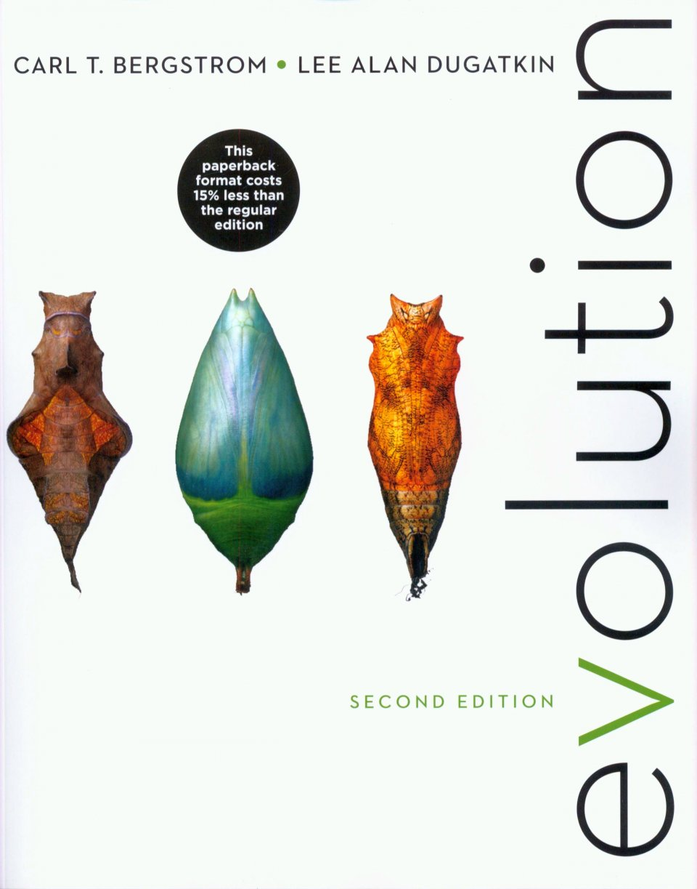

Texts
Evolution
by Bergstrom and DugatkinISBN: 0393937933

The Beak of the Finch
by Jonathan WeinerISBN: 0679400036

Schedule
| Date | Week | Topic | Reading | Tasks Due | Lecture notes |
|---|---|---|---|---|---|
| Thursday, Jan. 4 | 1 | Student lightning talks, Quiz, VO and RP hurrican talks about how we feel about the subject of evolution |
"Beak of the Finch." [Dhobzansky, 1976] |
-- | To be uploaded soon |
| Tuesday, Jan. 9 | 2 | Consider the Leviathan. The evolution of the whale. Whales as a case study to illuminate the way that fossils have informed us about the history of life on earth adn the truism that all is change (RP). | Chapter 4 (Phylogeny and Evolutionary History) | -- | TBD |
| Tuesday, Jan. 9 | Lab | History of life on a Ribbon. | TBD | -- | -- |
| Thursday, Jan. 11 | 2 | What the DNA says. A study of whales from the standpoint of DNA. This is our first serious foray into "molecules as documents of evolutionary history." (RP) | TBD | -- | TBD |
| Tuesday, Jan. 16 | 3 |
What happens when a whale dies? The microbial world revealed. Microbes and evolution. The history of microbes - microbial "fossils." Lynn Margulis, everything interesting in evolution happened before animals. (VO) |
TBD | -- | [VO Jan. 16 slides] |
| Tuesday, Jan. 16 | Lab | DNA science and evolution. Examination of DNA evidence. | -- | -- | -- |
| Thursday, Jan. 18 | 3 |
Microbes and the mechanisms of evolution. Horizontal gene transfer. (VO) |
|
-- | [VO Jan. 18 slides] |
| Tuesday, Jan. 23 | 4 | Island biogeography of amphibians. (RP) | TBD | -- | [RP Jan. 23 slides] |
| Tuesday, Jan. 23 | Lab | DNA science and island biogeography. | TBD | -- | |
| Thursday, Jan. 25 | 4 |
Island biogeography continued. The voyages of the great naturalitsts Wallace and Darwin. (RP) |
TBD | -- | [RP Jan. 25 slides] |
| Tuesday, Jan. 30 | 5 |
Galapagos and island biogeography. Introduction to the forces of evolution - mutation, drift, selection, migration. (RP) |
TBD | -- | TBD |
| Tuesday, Jan. 30 | Lab | Population genetics I. | TBD | -- | -- |
| Thursday, Feb. 1 | 5 |
Selection in a microbial setting. Reasons why styding microbes is ideal for experimental evolution. (VO) |
TBD | -- | [VO Feb. 01 slides] |
| Tuesday, Feb. 6 | 6 | Experimental evolution and the Lenski experiment. (RP) | TBD | -- | TBD |
| Tuesday, Feb. 6 | Lab |
Luria-Delbrück part I. Population genetics computation. |
TBD | -- | -- |
| Thursday, Feb. 8 | 6 | Experimental evolution to study genetic drift in flies - The Buri experiment on eye color. (RP) | TBD | -- | TBD |
| Tuesday, Feb. 13 | 7 | The general insights of population genetics. (RP) | TBD | -- | TBD |
| Tuesday, Feb. 13 | Lab | Luria-Delbrück part II. | TBD | -- | -- |
| Thursday, Feb. 15 | 7 |
Symbiosis. Insecticide resistance in beetles - Japan burkholderia. Wolbachia & sex. (VO) |
TBD | -- | TBD |
| Tuesday, Feb. 20 | 8 |
Symbiosis, morphological changes. Chemosynthesis. Adaptation biogeochem. (VO) |
TBD | -- | TBD |
| Tuesday, Feb. 20 | Lab | Lenski experiment on lab evolution part I. | TBD | -- | -- |
| Thursday, Feb. 22 | 8 | In class presentations of symbiotic associations. | TBD | -- | TBD |
| Tuesday, Feb. 27 | 9 | Human evolution. | TBD | -- | TBD |
| Tuesday, Feb. 27 | Lab | Lenski experiment part II. | TBD | -- | -- |
| Thursday, Mar. 1 | 8 | Human evolution. | TBD | -- | TBD |
| Tuesday, Mar. 6 | Lab | Symbiosis + FISH. | TBD | -- | -- |